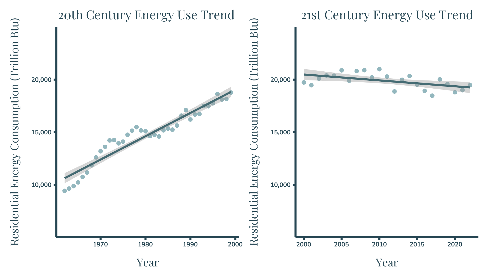
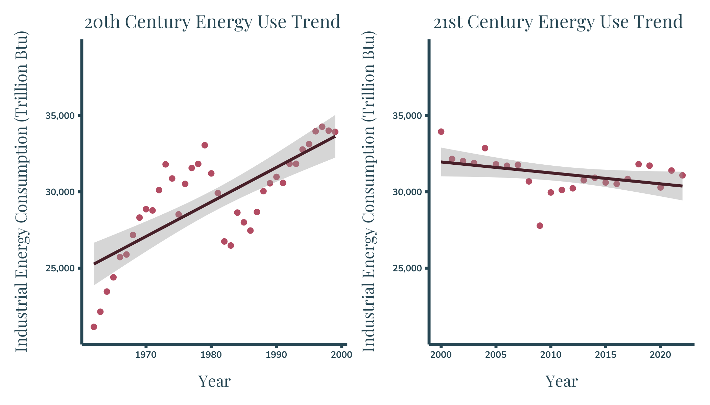
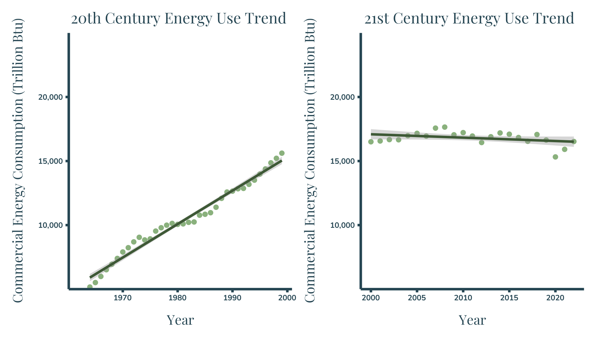
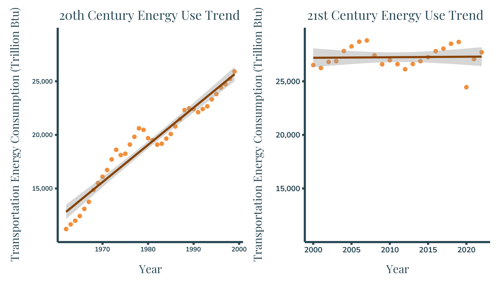

21st Century Energy Evolution: Trends & Transformations
Questions to Answer:
How has energy usage/consumption changed over time:
How has the overall usage changed over time?
how have the trends usage per sector changed between the 20th and 21st century?
Why are we seeing the trends we are?
About the Data
All the data and definitions used in this infographic come from the U.S. Energy Information Administration website. The first dataset is annual primary energy consumption by U.S. sector in trillion British thermal units (Btu) from 1949 to 2022. Working with this data required me to combine two datasets that I downloaded separately and filter to the exact subset of data I was after for each plot. The second dataset is annual U.S. energy intensity from 1949 to 2022 in a variety of units. I also used the EIA glossary page to find variable descriptions on an as needed basis.
Design Approach
graphic form: I found that the best way to display this data was with the fundamental chart types: area chart, line graph, and scatterplot. When looking at the data-to-viz website, there aren’t too many “creative” graphic forms to display trends over time. From the other options I found, including boxplots and ridgeline plots, the line and area plots made the most sense for this dataset, especially when including relevant linear regressions.
text (e.g. titles, captions, annotations, axis labels, axis ticks, alt text): For each of the figures below I was careful and considerate when choosing which text elements to include. Each of my figures include a title that gives the reader a quick overview of what data they are looking at. I chose not to include the take-home message in the title of the plot because I believe that information should be stored in the text of the infographic. Similarly with subtitles, only the energy intensity plot has a subtitle which describes what energy intensity is because it is not a commonly-known term. I generally would put the take-home message in the subtitle, but again that’s why there is accompanying text on the infographic. For captions, two of the graphs have captions with the data source included. The four middle graphs use the same dataset as cited in the very first graph and it felt redundant to include the same citations five times on the same infographic. Each figure as alt-text that describes the type of plot, the data being displayed, and the main message of the plot. For the two graphs that have captions the alt text is written into the code, and the four graphs that didn’t have captions in the infographic have captions and alt-text that I added in when I embedded the image into the site page. The full embedded inforgraphic also has alt-text. For axes properties, I made all the axes the same color as the background of the infographic for cohesion, and I used consitent scaling of the y-axis within each sector for easy comparison.
themes: I started each graph with theme_bw() and modified the elements from there including: removing legends, removing gridlines, removing panel border, and adjusting text. I decided to remove the gridlines from most of the plots because any plot showing trends doesn’t really need the gridlines, and with the linear regression plots that was just way too many lines to have on one small plot. I did decide to leave the major gridlines on the energy intensity plot because I feel like it’s nice to have an idea of roughly which time periods had the 15-10, 10-5, and < 5, energy intensities. Since this infographic has a ton of plots, I used the large icons representing each of the sectors to help orient the reader before they get into the details of the graph. I feel like without reading much of the figure text, you can tell which sector is which and see there are clear changes in usage-trends for all four sectors.
colors: I was really stumped about which colors to use because in a perfect world the colors would help the reader identify the sector, but when I think of electricity I think of yellow and when I think of each sector, I basically get varying shades of grey. From personal choice, I hate looking at yellow on a grey background on a screen, it gives me an instant migraine. So I went with a dark blue background and used white icons and text blocks to highlight the plots, and used dark blue text throughout the infographic. I also kept the colors consistent throughout so each sector is always represented as the same color and I used the accent lines color (same hue darker shade of each color in the color palette) on the stacked area chart as the trendline color for the sector graphs.
typography: I used a serif/san-serif typeface pairing using Playfair Display and Nunito. I used Playfair Display for all of the chart and infographic titles to capture the more stylistic font on the visualization headlines. I utilized the san-serif font, Nunito, for its readability when I needed small font on graph axes labels, or when I had blocks of text in the infographic.
general design (e.g. group order, spacing, text orientation, data-ink ratio, creating a visual hierarchy, avoiding information overload): There is a ton of information on this infographic. I tried to combat the information overload by including these large, simple icons that help the reader break down the infographic into easily-digestible components. I also have my information organized in a beginning-middle-end format because I was trying to answer a question but I really took it in more of a storytelling direction. So I have the block at the top of the infographic that kind of sets the scene as the introduction with the data source, some context, and a super easy to digest graph. The middle then gets more creative and has more of the nitty-gritty data analysis, and at the end I have another graph with a text block that summarizes why we saw the trends that we did.
contextualizing your data: I added context to my data by weaving some of the key definitions and information about the data into the infographic so that readers don’t have to go to a new tab to look up the information they’d need to understand the figure. Hopefully, this makes this high level energy data more accessible to a wider audience.
centering your primary message: This is the part where I feel like I stumbled the most. I think I got caught up in the “storytelling” element and had a hard time really hitting the “each graph answers a clear individual question” part of the project. I tried to literally center the bulk of the data analysis and draw the reader in with the visual elements, but I’m hoping that story-line feel helps leave viewers with a lasting conclusion.
considering accessibility (e.g. colorblind-friendly palettes / contrast, alt text) As I mentioned above, I was able to include alt-text for all of the figures on this site. And I used the Coolors website with the Let’s Get Colorblind Google Chrome extension to help me pick a color palette that was color-blind friendly.
applying a DEI lens to your design (e.g. considering the people / communities / places represented in your data, consider how you frame your questions / issue) Using national level data that was collected by a government agency takes the people/communities element out of the project, but it does open up opportunities for bias. However by reporting my sources and letting the data tell me the story, I hope to have mitigated Equity/Integrity issues.
Statistics:
Show the code
#select relevant Datares20 <- sct_data %>%filter(Description =="Total Energy Consumed by the Residential Sector"& year <2000)res21 <- sct_data %>%filter(Description =="Total Energy Consumed by the Residential Sector"& year >=2000)# Perform linear regressionres20lm <-lm(Value ~ year, data = res20)res21lm <-lm(Value ~ year, data = res21)#select relevant Datacomm20 <- sct_data %>%filter(Description =="Total Energy Consumed by the Commercial Sector"& year <2000)comm21 <- sct_data %>%filter(Description =="Total Energy Consumed by the Commercial Sector"& year >=2000)# Perform linear regressioncom20lm <-lm(Value ~ year, data = comm20)com21lm <-lm(Value ~ year, data = comm21)#select relevant Dataind20 <- sct_data %>%filter(Description =="Total Energy Consumed by the Industrial Sector"& year <2000)ind21 <- sct_data %>%filter(Description =="Total Energy Consumed by the Industrial Sector"& year >=2000)# Perform linear regressionind20lm <-lm(Value ~ year, data = ind20)ind21lm <-lm(Value ~ year, data = ind21)#select relevant Datatrans20 <- sct_data %>%filter(Description =="Total Energy Consumed by the Transportation Sector"& year <2000)trans21 <- sct_data %>%filter(Description =="Total Energy Consumed by the Transportation Sector"& year >=2000)# Perform linear regressiontr20 <-lm(Value ~ year, data = trans20)tr21 <-lm(Value ~ year, data = trans21)
Plot 1: Energy Consumption over Time
Show the code
p <- sct_data %>%#Create a ggplot, fill based on descriptionggplot(aes(x = year, y = Value, group = Description, fill = Description))+#make it an area chartgeom_area(aes(color = Description), stat ="identity")+#set the labels so the legend names aren't so longscale_fill_manual(labels =c("Commercial", "Industrial", "Residential", "Transportation"), #add the color palettevalues = main_pal)+scale_color_manual(values = accent_pal,guide ="none")+#Add the chart labels/textlabs(title ="Total Annual Energy Consumption by Sector from 1962-2022",x ="Year",y ="Total Energy Consumption (Trillion Btu)",caption ="Source: Total Energy Annual Data—U.S. Energy Information Administration (EIA). (n.d.). Retrieved January 30, 2024, from https://www.eia.gov/totalenergy/data/annual/index.php",alt ="The figure shows a stacked area chart for annual energy usage from 1962 to 2020 by sector for the Residential, Industrial, Commercial, and Transportation sectors in the United States. The graphs shows a gradual increase in the annual energy usage across all sectors until 2000, when the usage across all sectors begins to plateau. The total energy consumption of all sectors was just below 50,000 Trillion BTU in 1962 and plateaus around 75,000 BTU by 2022. The industrail and transportation setcors use the most energy with the commercial and residential sectors using slightly less overall.")+#expand to fill the whole space, and fix axis formattingscale_y_continuous(expand =c(0, 0), labels =label_comma())+scale_x_continuous(expand =c(0, 0))+#Edit themetheme_bw()+theme(panel.grid.major =element_blank(), # Remove major gridlinespanel.grid.minor =element_blank(), #Remove Minor gridlinespanel.border =element_blank(), #Remove panel borderaxis.line =element_line(color ="#264653", linewidth =1), #Change the axis line width and coloraxis.ticks =element_line(color ="#264653", linewidth =1),#Change the axis tick linewidth and colorlegend.position ="top", # Place legend at the toplegend.box ="horizontal", # Make legend items horizontallegend.direction ="horizontal", # Set legend direction to horizontallegend.title =element_blank(), #Remove legend titleplot.title =element_text(family="playfair", #change title fontsize=65, #change title sizehjust =0.5, #change title positioncolor ="#264653"), #change title colorplot.caption =element_text(family ="nunito", #Change axis fontsize =25,#change caption font sizeface ="bold", #change caption font facecolor ="#264653",#change caption colorhjust =0.5), #center captionaxis.text =element_text(family ="nunito", #Change axis fontsize =30,#change axis font sizeface ="bold", #change axis font facecolor ="#264653"),#change axis coloraxis.title =element_text(family ="playfair", #Change axis title fontsize =40, #Change axis title font sizecolor ="#264653"), #Change axis title font colorlegend.text =element_text(family ="nunito", #Change legend fontsize =35, #Change legend font sizecolor ="#264653"), #Change legend font color#Create space between the graph and the x axisaxis.title.x =element_text(margin =margin(4, 0, 0, 0, "mm")), #Create space between the graph and the y axisaxis.title.y =element_text(margin =margin(0, 4, 0, 0, "mm")))#ggsave(filename = "infographic_plot1.png", width = 16, height = 4)
Plot 2: The 4 part summary
Show the code
#------------------------------------------------------------------------------# Residential Sector #-------------------------------------------------------------------------------#Select Relevant DataPlot2.1a <- sct_data %>%filter(Description =="Total Energy Consumed by the Residential Sector") %>%filter(year <2000) %>%#Create Plotggplot(aes(x = year, y = Value))+geom_point(color ="#93B7BE")+#add the labels for the whole chartlabs(title ="20th Century Energy Use Trend",x ="Year",y ="Residential Energy Consumption (Trillion Btu)")+# Adjust y axis propertiesscale_y_continuous(expand =c(0, 0), breaks = custom_breaks, #set custom breakslimits = custom_limits, #set custom limitslabels =label_comma())+#format axis labels#add the trend linegeom_smooth(method ="lm", se =TRUE, show.legend =NA, color ="#456B73")+#set the themetheme_bw()+theme(panel.grid.major =element_blank(), # Remove major gridlinespanel.grid.minor =element_blank(), #remove minor gridlinespanel.border =element_blank(), #remove borderaxis.line =element_line(color ="#264653", linewidth =1), #set axis propertiesaxis.ticks =element_line(color ="#264653", linewidth =1), #Set axis tick propertieslegend.position ="NA", # Remove Legend#Set text properties including position, size, and colorplot.title =element_text(family="playfair",size=plot_title_size, hjust =0.25, color ="#264653"),axis.text =element_text(family ="nunito",size =20,face ="bold", color ="#264653"),axis.title =element_text(family ="playfair",size = axis_title_size, color ="#264653" ),#Expand Plotaxis.title.x =element_text(margin =margin(4, 0, 0, 0, "mm")),axis.title.y =element_text(margin =margin(0, 4, 0, 0, "mm")))#Select Relevant DataPlot2.1b <- sct_data %>%filter(Description =="Total Energy Consumed by the Residential Sector") %>%filter(year >=2000) %>%#Create Plotggplot(aes(x = year, y = Value))+geom_point(color ="#93B7BE")+#add the labels for the whole chartlabs(title ="21st Century Energy Use Trend",x ="Year",y ="Residential Energy Consumption (Trillion Btu)")+# Adjust y axis propertiesscale_y_continuous(expand =c(0, 0), breaks = custom_breaks, limits = custom_limits, labels =label_comma())+#add the trend linegeom_smooth(method ="lm", se =TRUE, show.legend =NA, color ="#456B73")+#set the themetheme_bw()+theme(panel.grid.major =element_blank(), # Remove major gridlinespanel.grid.minor =element_blank(), #remove minor gridlinespanel.border =element_blank(), #remove panel border,axis.line =element_line(color ="#264653", linewidth =1), #set axis propertiesaxis.ticks =element_line(color ="#264653", linewidth =1), #Set axis tick propertieslegend.position ="NA", # Remove legend#Set text properties including position, size, and colorplot.title =element_text(family="playfair",size=plot_title_size, hjust =0.5, color ="#264653"),axis.text =element_text(family ="nunito",size =20,face ="bold", color ="#264653"),axis.title =element_text(family ="playfair",size = axis_title_size, color ="#264653"),#Expand plotaxis.title.x =element_text(margin =margin(4, 0, 0, 0, "mm")),axis.title.y =element_text(margin =margin(0, 4, 0, 0, "mm")))#Plot2.1a +Plot2.1b#ggsave(filename = "infografphic_plot2.1.png", width = 7, height = 4)#------------------------------------------------------------------------------# Industrial Sector #-------------------------------------------------------------------------------#Select Relevant DataPlot2.3a <- sct_data %>%filter(Description =="Total Energy Consumed by the Industrial Sector") %>%filter(year <2000) %>%#Create plotggplot(aes(x = year, y = Value))+geom_point(color ="#B24C63")+#add the labels for the whole chartlabs(title ="20th Century Energy Use Trend",x ="Year",y ="Industrial Energy Consumption (Trillion Btu)")+#Adjust y axis propertiesscale_y_continuous(expand =c(0, 0), breaks =c(25000,30000,35000), limits =c(20000,40000), labels =label_comma())+#add the trend linegeom_smooth(method ="lm", se =TRUE, show.legend =NA, color ="#471F28")+#set the themetheme_bw()+theme(panel.grid.major =element_blank(), # Remove major gridlinespanel.grid.minor =element_blank(), #Remove minor gridlinespanel.border =element_blank(), #remove panel borderaxis.line =element_line(color ="#264653", linewidth =1), #set axis line propertiesaxis.ticks =element_line(color ="#264653", linewidth =1),#set axis tick propertieslegend.position ="NA", # Remove Legend#Set plot text color, size on fontplot.title =element_text(family="playfair",size=plot_title_size, hjust =0.25, color ="#264653"),axis.text =element_text(family ="nunito",size =20,face ="bold", color ="#264653"),axis.title =element_text(family ="playfair",size = axis_title_size, color ="#264653"),#expand plotaxis.title.x =element_text(margin =margin(4, 0, 0, 0, "mm")),axis.title.y =element_text(margin =margin(0, 4, 0, 0, "mm")))#Select relevant dataPlot2.3b <- sct_data %>%filter(Description =="Total Energy Consumed by the Industrial Sector") %>%filter(year >=2000) %>%#Create Plotggplot(aes(x = year, y = Value))+geom_point(color ="#B24C63")+#add the labels for the whole chartlabs(title ="21st Century Energy Use Trend",x ="Year",y ="Industrial Energy Consumption (Trillion Btu)")+#Adjust y axis propertiesscale_y_continuous(expand =c(0, 0), breaks =c(25000,30000,35000), limits =c(20000,40000), labels =label_comma())+#add the trend linegeom_smooth(method ="lm", se =TRUE, show.legend =NA, color ="#471F28")+#set the themetheme_bw()+theme(panel.grid.major =element_blank(), # Remove major gridlinespanel.grid.minor =element_blank(),#Remove minor gridlinespanel.border =element_blank(), #Remove panel borderaxis.line =element_line(color ="#264653", linewidth =1), #Set axis line propertiesaxis.ticks =element_line(color ="#264653", linewidth =1), #set axis tick propertieslegend.position ="NA", # Remove legend#Set plot text font, size color and positionplot.title =element_text(family="playfair",size=plot_title_size, hjust =0.25, color ="#264653"),axis.text =element_text(family ="nunito",size =20,face ="bold", color ="#264653"),axis.title =element_text(family ="playfair",size = axis_title_size, color ="#264653"),strip.text =element_text(family ="nunito",size =40, color ="#264653"),#Expand plotaxis.title.x =element_text(margin =margin(4, 0, 0, 0, "mm")),axis.title.y =element_text(margin =margin(0, 4, 0, 0, "mm")))#Plot2.3a + Plot2.3b#ggsave(filename = "infografphic_plot2.3.png", width = 7, height = 4)#------------------------------------------------------------------------------# Commercial Sector #-------------------------------------------------------------------------------#Select Relevant dataPlot2.2a <- sct_data %>%filter(Description =="Total Energy Consumed by the Commercial Sector") %>%filter(year <2000) %>%#create plotggplot(aes(x = year, y = Value))+geom_point(color ="#8AB17D")+#add the labels for the whole chartlabs(title ="20th Century Energy Use Trend",x ="Year",y ="Commercial Energy Consumption (Trillion Btu)")+#Adjust y axis propertiesscale_y_continuous(expand =c(0, 0), breaks = custom_breaks, limits = custom_limits, labels =label_comma())+#add the trend linegeom_smooth(method ="lm", se =TRUE, show.legend =NA, color ="#3E5936")+#set the themetheme_bw()+theme(panel.grid.major =element_blank(), # Remove major gridlinespanel.grid.minor =element_blank(), #remove minor gridlinespanel.border =element_blank(), #remove panel borderaxis.line =element_line(color ="#264653", linewidth =1), #set axis line propertiesaxis.ticks =element_line(color ="#264653", linewidth =1), #set axis tick propertieslegend.position ="NA", # Remove legend#set plot text font, color, size, and positionplot.title =element_text(family="playfair",size=plot_title_size, hjust =0.25, color ="#264653"),axis.text =element_text(family ="nunito",size =20,face ="bold", color ="#264653"),axis.title =element_text(family ="playfair",size = axis_title_size, color ="#264653"),strip.text =element_text(family ="nunito",size =40, color ="#264653"),#expand plotaxis.title.x =element_text(margin =margin(4, 0, 0, 0, "mm")),axis.title.y =element_text(margin =margin(0, 4, 0, 0, "mm")))#select relevant DataPlot2.2b <- sct_data %>%filter(Description =="Total Energy Consumed by the Commercial Sector") %>%filter(year >=2000) %>%#create plotggplot(aes(x = year, y = Value))+geom_point(color ="#8AB17D")+#add the labels for the whole chartlabs(title ="21st Century Energy Use Trend",x ="Year",y ="Commercial Energy Consumption (Trillion Btu)")+#Adjust y axis propertiesscale_y_continuous(expand =c(0, 0), breaks = custom_breaks, limits = custom_limits, labels =label_comma())+#add the trend linegeom_smooth(method ="lm", se =TRUE, show.legend =NA, color ="#3E5936")+#set the themetheme_bw()+theme(panel.grid.major =element_blank(), # Remove major gridlinespanel.grid.minor =element_blank(), #remove minor gridlinespanel.border =element_blank(), #remove panel borderaxis.line =element_line(color ="#264653", linewidth =1), #set asix line propertiesaxis.ticks =element_line(color ="#264653", linewidth =1), #set axis tick propertieslegend.position ="NA", # remove legend#Set plot text font, color, size, and positionplot.title =element_text(family="playfair",size=plot_title_size, hjust =0.25, color ="#264653"),axis.text =element_text(family ="nunito",size =20,face ="bold", color ="#264653"),axis.title =element_text(family ="playfair",size = axis_title_size, color ="#264653"),strip.text =element_text(family ="nunito",size =40, color ="#264653"),#expand plotaxis.title.x =element_text(margin =margin(4, 0, 0, 0, "mm")),axis.title.y =element_text(margin =margin(0, 4, 0, 0, "mm")))#Plot2.2a + Plot2.2b#ggsave(filename = "infografphic_plot2.2.png", width = 7, height = 4)#------------------------------------------------------------------------------# Transportation sector #-------------------------------------------------------------------------------#Select relevant dataPlot2.4a <- sct_data %>%filter(Description =="Total Energy Consumed by the Transportation Sector") %>%filter(year <2000) %>%#create plotggplot(aes(x = year, y = Value))+geom_point(color ="#F28F3B")+#add the labels for the whole chartlabs(title ="20th Century Energy Use Trend",x ="Year",y ="Transportation Energy Consumption (Trillion Btu)")+#Adjust y axis propertiesscale_y_continuous(expand =c(0, 0), breaks =c(15000,20000,25000), limits =c(10000,30000), labels =label_comma())+#add the trend linegeom_smooth(method ="lm", se =TRUE, show.legend =NA, color ="#864309")+#set the themetheme_bw()+theme(panel.grid.major =element_blank(), # Remove major gridlinespanel.grid.minor =element_blank(), #Remove minor gridlinespanel.border =element_blank(), #Remove panel borderaxis.line =element_line(color ="#264653", linewidth =1), #set axis line propertiesaxis.ticks =element_line(color ="#264653", linewidth =1), #set axis tick propertieslegend.position ="NA", # Remove legend#Set plot text size, color, font and positionplot.title =element_text(family="playfair",size=plot_title_size, hjust =0.25, color ="#264653"),axis.text =element_text(family ="nunito",size =20,face ="bold", color ="#264653"),axis.title =element_text(family ="playfair",size = axis_title_size, color ="#264653"),strip.text =element_text(family ="nunito",size =40, color ="#264653"),#Expand plotaxis.title.x =element_text(margin =margin(4, 0, 0, 0, "mm")),axis.title.y =element_text(margin =margin(0, 4, 0, 0, "mm")))#Select relevant DataPlot2.4b <- sct_data %>%filter(Description =="Total Energy Consumed by the Transportation Sector") %>%filter(year >=2000) %>%#Create plotggplot(aes(x = year, y = Value))+geom_point(color ="#F28F3B")+#add the labels for the whole chartlabs(title ="21st Century Energy Use Trend",x ="Year",y ="Transportation Energy Consumption (Trillion Btu)")+#Adjust y axis propertiesscale_y_continuous(expand =c(0, 0), breaks =c(15000,20000,25000), limits =c(10000,30000), labels =label_comma())+#add the trend linegeom_smooth(method ="lm", se =TRUE, show.legend =NA, color ="#864309")+#set the themetheme_bw()+theme(panel.grid.major =element_blank(), # Remove major gridlinespanel.grid.minor =element_blank(), #Remove minor gridlinespanel.border =element_blank(), #remove panel borderaxis.line =element_line(color ="#264653", linewidth =1), #Set axis line propertiesaxis.ticks =element_line(color ="#264653", linewidth =1), #Set axis tick propertieslegend.position ="NA", # Place legend at the top#Set plot text size, color, font, and positionplot.title =element_text(family="playfair",size=plot_title_size, hjust =0.25, color ="#264653"),axis.text =element_text(family ="nunito",size =24,face ="bold", color ="#264653"),axis.title =element_text(family ="playfair",size = axis_title_size, color ="#264653"),strip.text =element_text(family ="nunito",size =40, color ="#264653"),#Expand Plotaxis.title.x =element_text(margin =margin(4, 0, 0, 0, "mm")),axis.title.y =element_text(margin =margin(0, 4, 0, 0, "mm")))#Plot2.4a + Plot2.4b#ggsave(filename = "infografphic_plot2.4.png", width = 7, height = 4)

Source:Total Energy Annual Data—U.S. Energy Information Administration (EIA). (n.d.). Retrieved January 30, 2024, from https://www.eia.gov/totalenergy/data/annual/index.php

Source:Total Energy Annual Data—U.S. Energy Information Administration (EIA). (n.d.). Retrieved January 30, 2024, from https://www.eia.gov/totalenergy/data/annual/index.php

Source:Total Energy Annual Data—U.S. Energy Information Administration (EIA). (n.d.). Retrieved January 30, 2024, from https://www.eia.gov/totalenergy/data/annual/index.php

Source:Total Energy Annual Data—U.S. Energy Information Administration (EIA). (n.d.). Retrieved January 30, 2024, from https://www.eia.gov/totalenergy/data/annual/index.php
Plot 3: Energy Intensity
Show the code
#define subtitle text and set the wrapping propertiessubtitle_text<-str_wrap("Energy Intensity is a measure of how much energy is required to produce one unit of Gross Domestic Product. In this chart, energy intensity is measured in Thousand Btu per Chained (2017) Dollar", width =100)caption_text <-str_wrap("Source: U.S. Energy Information Administration—EIA - Independent Statistics and Analysis. (n.d.). Retrieved March 16, 2024, from https://www.eia.gov/totalenergy/data/browser/index.php?tbl=T01.07#/?f=A&start=1949&end=2020&charted=3", width =200)#Create the plotgraph <-ggplot(data = intensity, aes(x = year, y = Value))+geom_line(color ="#78309C", size =3)+geom_point(color ="#D5B1E7", size =2)+#Add plot labels including caption and alternative textlabs(title ="Energy Intensity in the U.S. from 1949-2022",subtitle = subtitle_text,x ="Year",y ="Energy Intensity ",caption = caption_text,alt="Figure shows a line chart of United States energy intensity from 1949 to 2022. There is a gradual decline in the energy intensity showing a 1949 energy intensity of around 13 Thousand Btu per Chained (2017) Dollar and a 2022 energy intensity of below 5 Thousand Btu per Chained (2017) Dollar, with the steady decrease happening between 1970 and 2022.")+#Adjust y axis propertiesscale_y_continuous(expand =c(0, 0), breaks =c(5,10,15), limits =c(0,20))+#Set theme propertiestheme_bw()+theme(panel.grid.minor =element_blank(), #Remove minor gridlinespanel.border =element_blank(), #remove panel borderaxis.line =element_line(color ="#264653", linewidth =1), #Set axis line propertiesaxis.ticks =element_line(color ="#264653", linewidth =1), #set the axis tick propertiesplot.title =element_text(family="playfair", #Set plot title fontsize=50, #Set plot title sizehjust =0.25, #Set plot title positioncolor ="#264653"),#Set plot title font colorplot.subtitle =element_text(family="nunito", #Set plot subtitle fontsize=30, #Set plot subtitle font sizecolor ="#264653", #Set plot subtitle font colorlineheight =0.35), #Set plot subtitle linespacingplot.caption =element_text(family ="nunito", #Change axis fontsize =16,#change caption font sizeface ="bold", #change caption font facecolor ="#264653",#change caption colorhjust =0.5,lineheight =0.35), #center captionaxis.text =element_text(family ="nunito", #Set axis text fontsize =35, #Set axis text font sizeface ="bold", #Set axis text font facecolor ="#264653"), #Set axis text font coloraxis.title =element_text(family ="playfair", #Set axis title fontsize =40, #Set axis title font sizecolor ="#264653"), #Set axis title font color#Add space between the axes and plotaxis.title.x =element_text(margin =margin(4, 0, 0, 0, "mm")),axis.title.y =element_text(margin =margin(0, 4, 0, 0, "mm")))ggsave(filename ="infografphic_plot3.png", width =7, height =5)

![The figure shows a stacked area chart for annual energy usage from 1962 to 2020 by sector for the Residential, Industrial, Commercial, and Transportation sectors in the United States. The graphs shows a gradual increase in the annual energy usage across all sectors until 2000, when the usage across all sectors begins to plateau. The total energy consumption of all sectors was just below 50,000 Trillion BTU in 1962 and plateaus around 75,000 BTU by 2022. The industrail and transportation setcors use the most energy with the commercial and residential sectors using slightly less overall.](infographic_plot1.png)